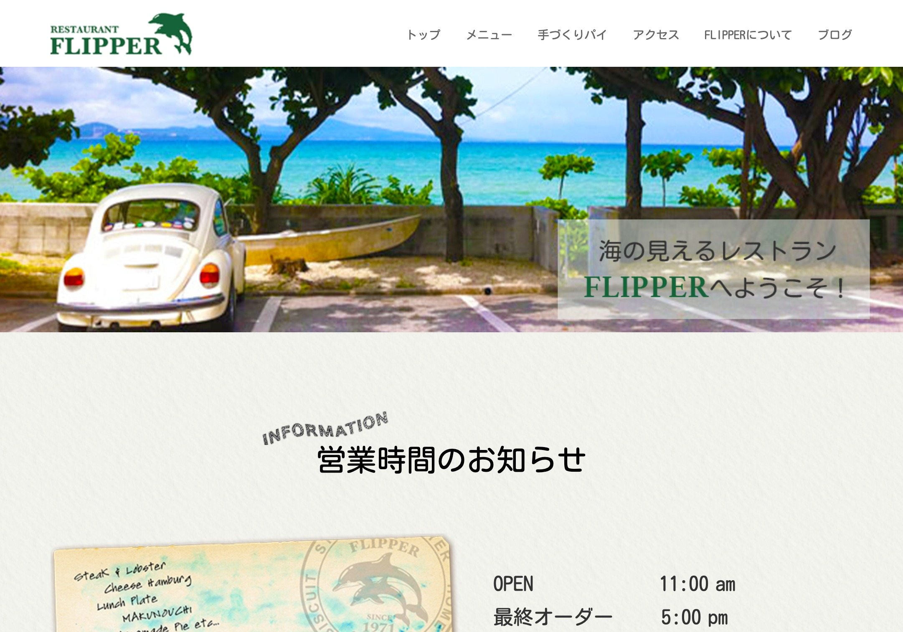

flipper
RENEWAL DESIGN , CORDING

- https://mimoti.github.io/flipper/
- 【概要】
職業訓練学校での2作品目になります。 - 【使用ソフト】
Adobe Photoshop , VSCode - 【言語】
HTML5 , CSS3(SCSS) , jQuery - 【目的】
コンセプトをわかりやすく
海の見えるレストラン「ふりっぱー」のサイトリニューアルを行いました。レストランのコンセプトを視覚的にわかりやすくするために、ファーストビューに海やステーキの画像をスライドショー形式で配置しています。また、各所にイラストを配置することで楽しい雰囲気を表現しています。（イラストはiPadにて制作）
マウスホバー時のアニメーションを取り入れ、遊び感覚でサイトを閲覧していただけるよう心がけました。